S T U D I O · I I I¶
The first intervention for this term is a workshop planned together with Clean Beach Initiative and Centro de la Playa with the topic of Micro Plastics where we will be presenting the tools to collect micro Platsics that we worked on during the first term.
C L E A N B E A C H I N I T I A T I V E x C E N T R O D E L A P L A Y A 29.04.23 · Micro Plastic Workshop
This opportunity arose from the evolved collaboration and dialogues we have had with Clean Beach Initiative while participating in the beach cleanups they arrange on Saturdays. They have had contact with Centro de la Playa in the past but without continuation. To introduce the tools we have been working on to collect microplastics during the cleanup and to reconnect with Centro de la Playa we togehter organised a workshop where they will speak about how they work with the topic, we will show the tools and learnings we’ve had during the cleanups, therafter together use the tools while cleaning the beach and at the end have a dialogue about the outcomes and a brainstorming session to unlock topics and ideas that could contribute to cleaner beaches.
This session will hopefully introduce our individual work and let us find possible collaborations within our mutual goals.
Through the brainstorming session we are looking to ask how we can involve people on the beach to be more aware and active about keeping the beach clean, If there are possibilities for something permanent on the beach that could be used by organizations or general public? We will prepare the workshop with photos of other interventions around the world, as well as some topics in different scales to start conversations and the imagination.


The experience was very insightful. We listened to Marc from Centro de la Playa talk about Microplastics, origins and what can be done to prevent it from reaching nature. He also showed how Centro de la Playa works with educational programs for anyone that is interested. One of the things they teach and show in these programs is how to in a citizen science way, collect sand from different parts of the beach to document amounts of microplastics.
It is done by randomly choosing a part of the beach, the top part of the sand in a square of 60 x 60 centimeters is collected in a bag, documented and registered exact space where collected and then brought back to the lab to seperate microplastics and sorted in size and origin to be documented.
Sami and I then presented the work we’ve done during the beach cleanups, where we have brought different nets and tools to collect microplastics.
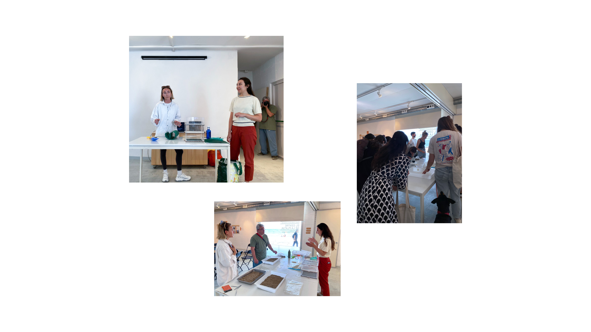
Therafter we had organised a brainstorming session to collectively reflect on what we had learned during the workshop and reflections about the beach cleanups, and different ways to approach solutions to waste, collection and
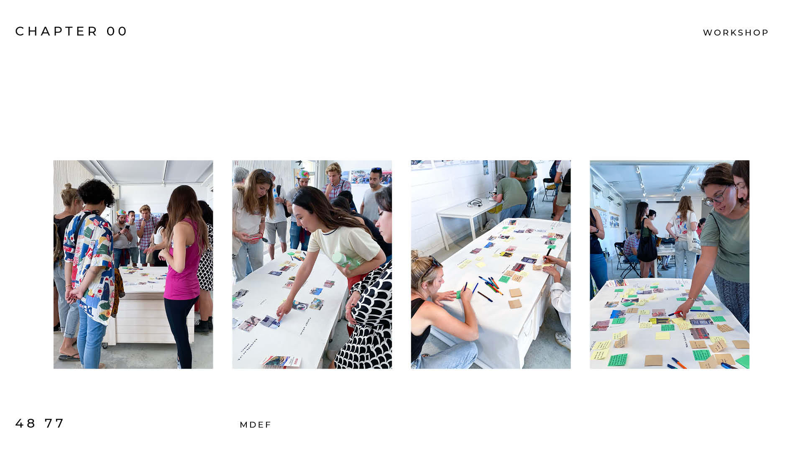
 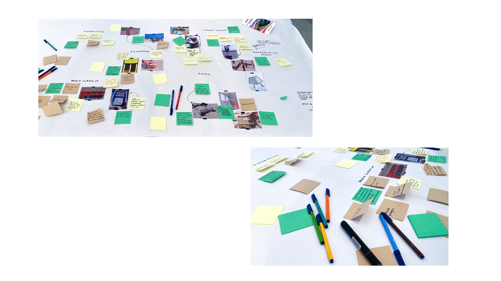
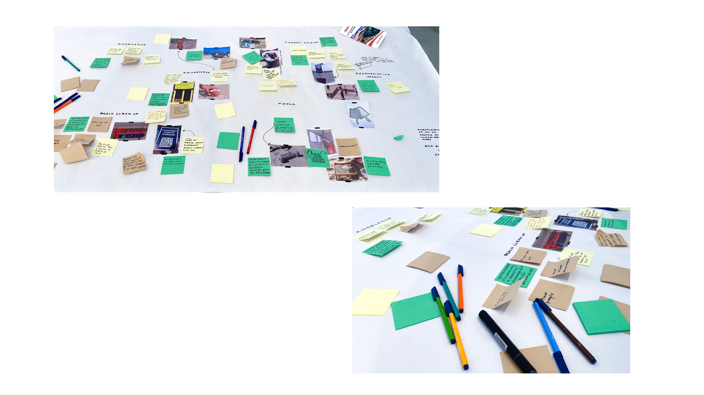
From the experience we had thought to look at ways of creating tools or possibilities for citizens and Clean Beach Initiative to use, although what became evidident was that first citizens need to become aware of the impact they can have by taking action. If participants of the group we were working with, that regularily go to beach cleanups were unaware of the amounts of microplastics in our environment and where they come from, we concluded that citizens outside of this community could also be unaware - of microplastics and waste on coastlines overall.
During the beach cleanups we could see trends of where certain types of waste were normally found and collected. Micro plastics are mostly found in patches close to the meetup point and closer to the shoreline where the wind and sea havecollected them in patches. Cigarette butts are found all around the beach although it is now a nonsmoking beach, yet around the pathway there are large concentrations as well as all along the stroke in front of the beach clubs. Every Saturday during the beach clean ups there are large amounts of cigarette butts, lollipop sticks, plastic glasses and cans in this area. In frnt of the beach clubs along the shore there are during the day sunbeds, around these there are large amounts of cigarette butts as well.
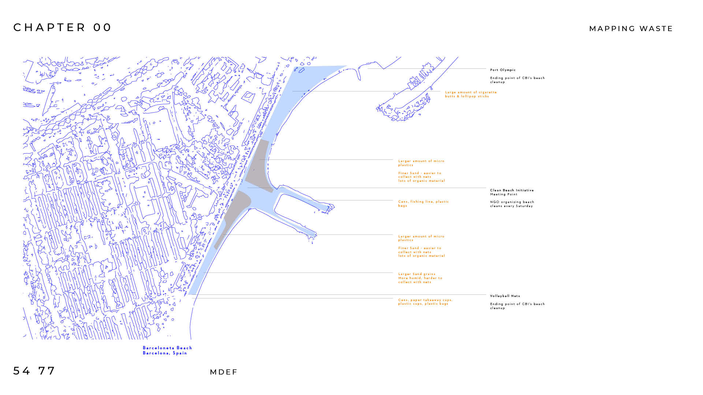
Overall what is mostly found is cigarette butts, lollipop sticks, plastic and paper straws, cans, plsatic cups and bottles, plastic packaging, aluminium foil and packaging, paper cups and packaging, styrophoam, micro plstics, organic waste and fishing line and gear. 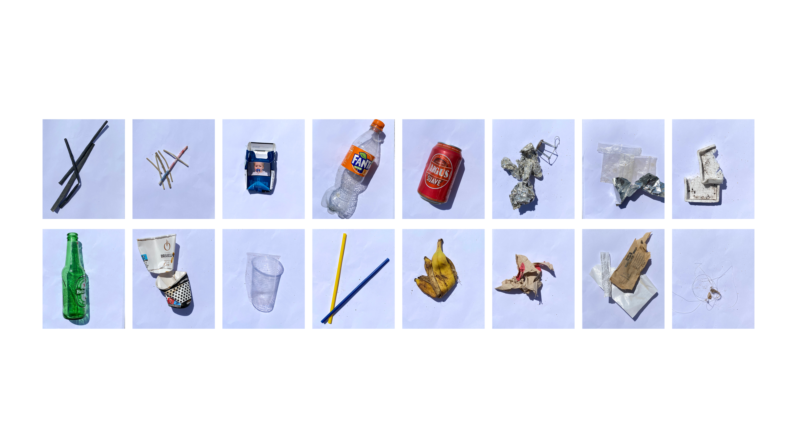
Clean Beach Initiative documents all the waste that is sorted and weighed at the end of each beach cleanup and posts the findings on their Instagram once a week. We volunteer every Saturday for one hour and know how much is collected, but how much did we collect in total? We started visualising how much waste this organisation and their volunteers collect every month and every year. Could it help to show the amount of waste collected in a very short amount of time in a visualisation to create awareness of the impact one hour a week can have?
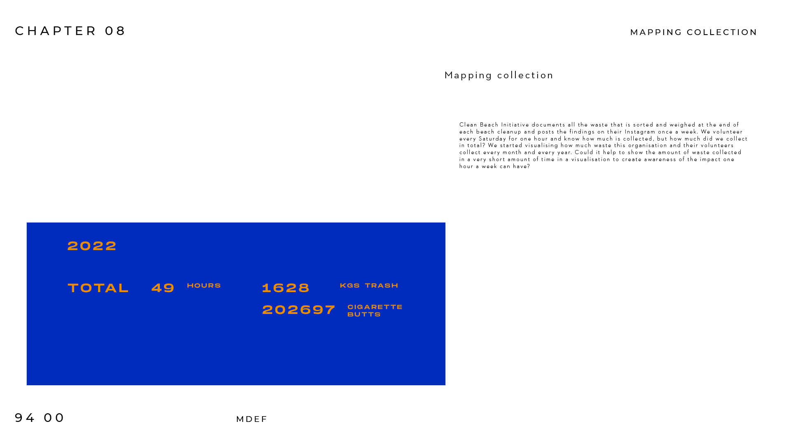 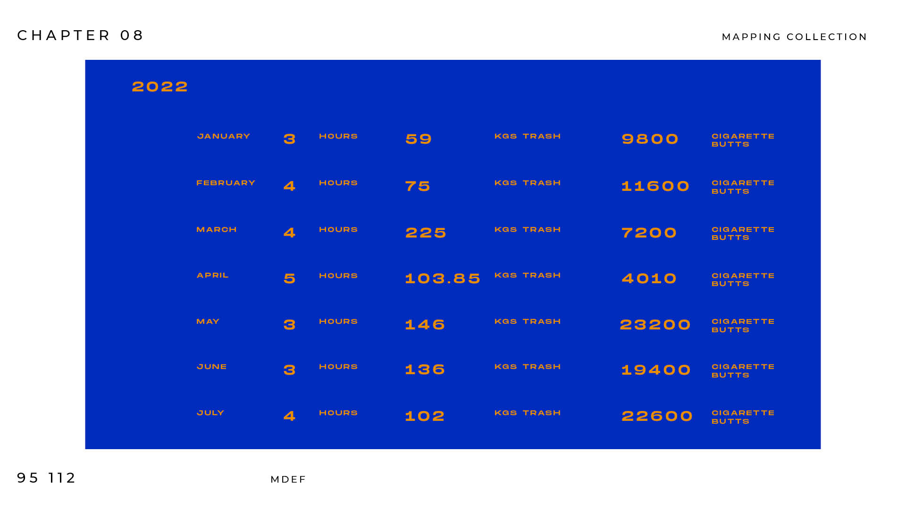 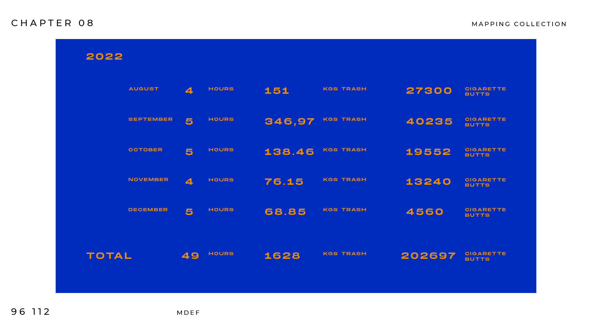 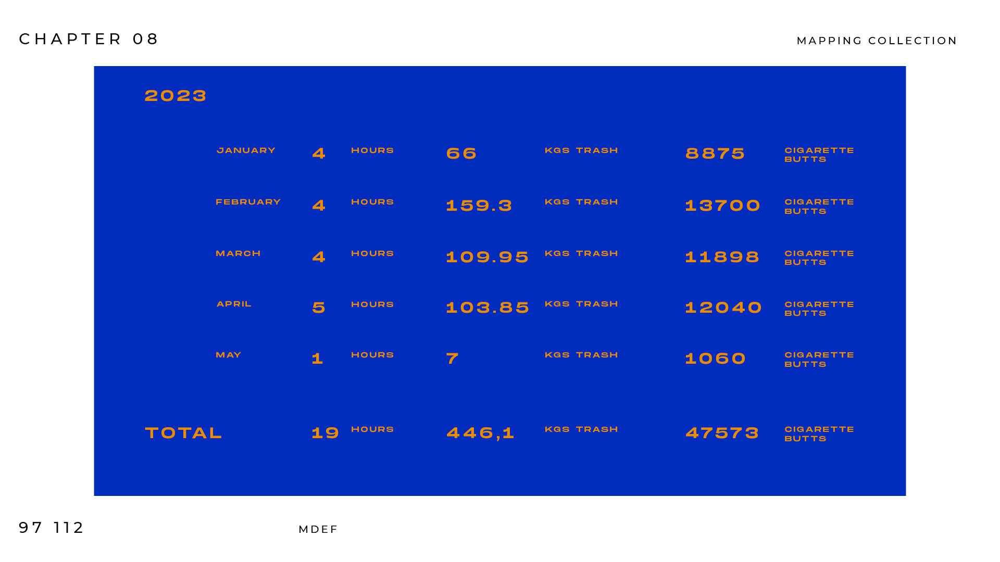 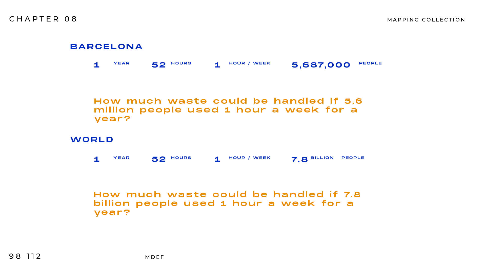
Assignment · U P D A T E D D E S I G N S P A C E
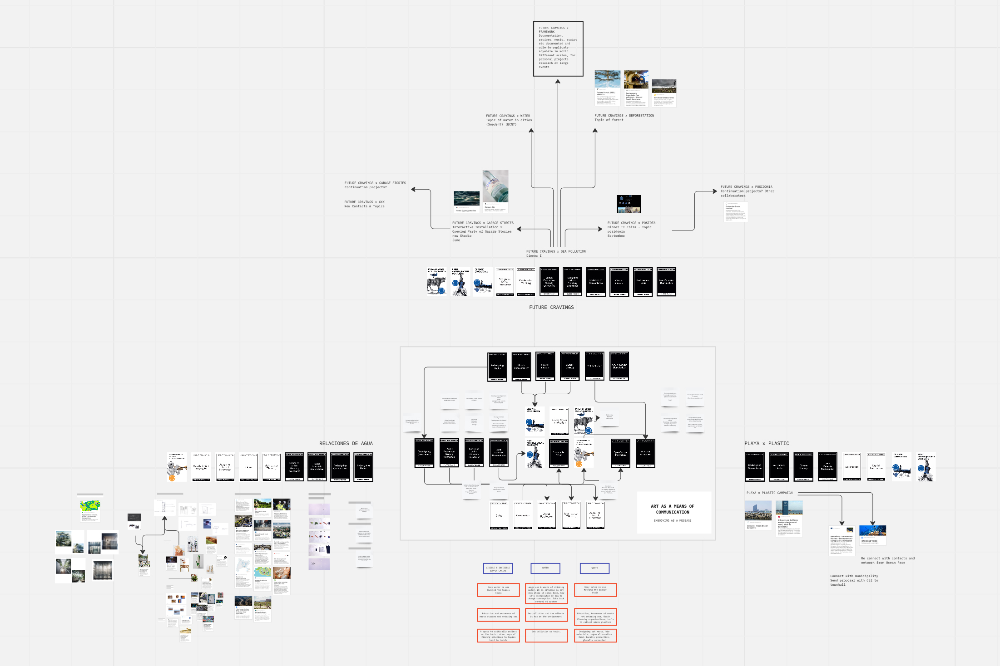
M D E F e s t
For the MDEFest we will be continuing a collaboration that arose from the first dinner experience where we will be translating the methodology to an installation that will be a part of Garage Stories opening ceromony for their new studio in Barceloneta. The installation will be an interactive experience to illustrate visuals, sounds and artefacts within act of conversation and storytelling in a sensory experience to communicate the concept. To further visualise the concept and dinner experiences interactive posters will accompany the installation to advertise the concept for new topics and participants.
‘A Cocktail with the Sea’ - An immersive experience of the five layers of the sea, activating the senses with visuals, artefacts, sound, taste and smell.
Join us at Future Cravings for the Opening of Garage Stories Barcelona, where you’ll have the opportunity to enjoy a refreshing Corpen Gin cocktail while immersing yourself in an installation that reflects the five zones of the ocean. Experience the challenges faced by our oceans due to microplastics, contemplate your personal connection to the water, and connect with likeminded sea practitioners.
It will take place the 18th of June where we will be collaborating with Martha and Garage Stories, as well as Corpen Gin that will be providing us with gin from their destillery. A collaboration that arose from mutual interests in Micro Plastics. They will also be attending the event.
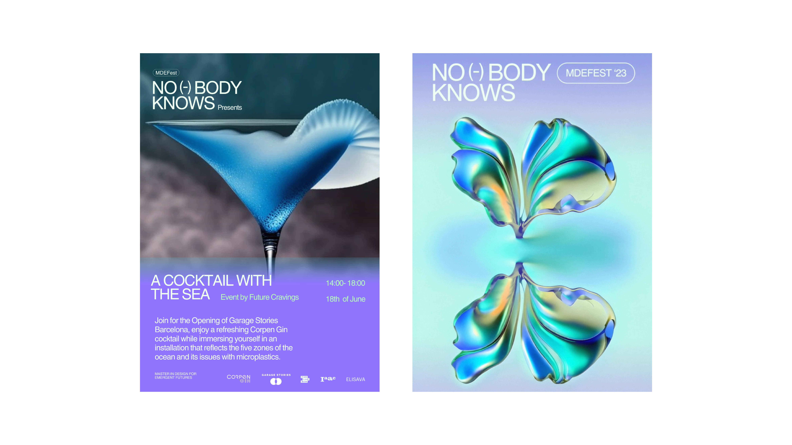
It is to be an interactive installation centered around the five layers of the sea that we worked through furing the dinner with the topic sea pollution. Through light, sound, objects, taste and smell the installation goes through different phases when guiding the audience through the different layers of the sea.
Entering a dark room the audience start the experience at the bottom of the sea - the darkness and room interupting the body from the outside air, sounds and light. The audience walks through a dark blue room with floating plastics and bio materials. This installation of objects transforming the way people travel through the space - ‘if we can wake up someones body, we might wake up their mind’. The shapes are deformed, yet familiar, taking something people can understand to use it in a way to explain something they might not understand, hopefully considering it in a new way. Throughout the journey the blue room is getting lighter while moving through the layers of the sea to the surface, all the while guided by a narrator prompting questions and movements.
The experience comes to its final stages of recycled plastic tables with jello cakes on bio material plates, where you eat from a blue mussel shell spoon each - acting as an interuption of the silent audience welcoming them to share food and experiences. Meanwhile gin drinks are served in shell glasses, sponsored by Corpen Gin - fully committed to decrease microplastics in the oceans as well.
Through the experience we wanted to consider as many senses as possible, as the more senses involved the more porwerful the experience can be. 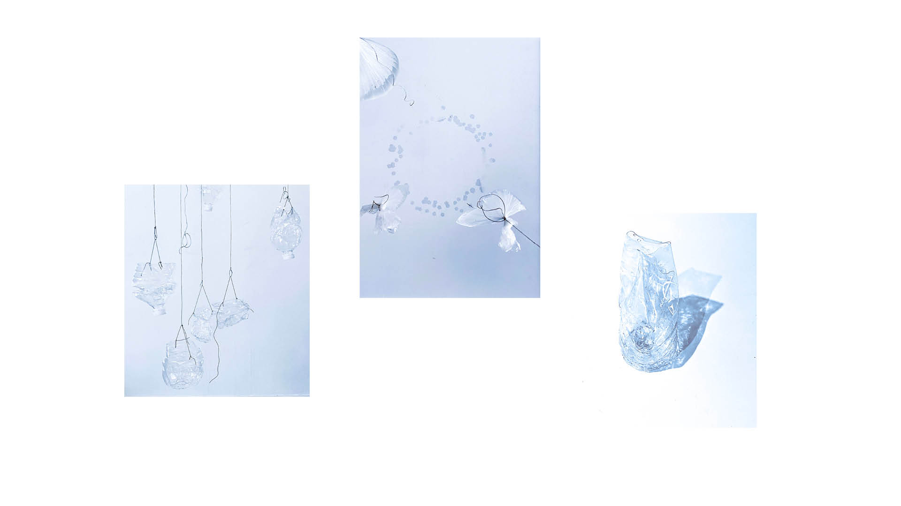 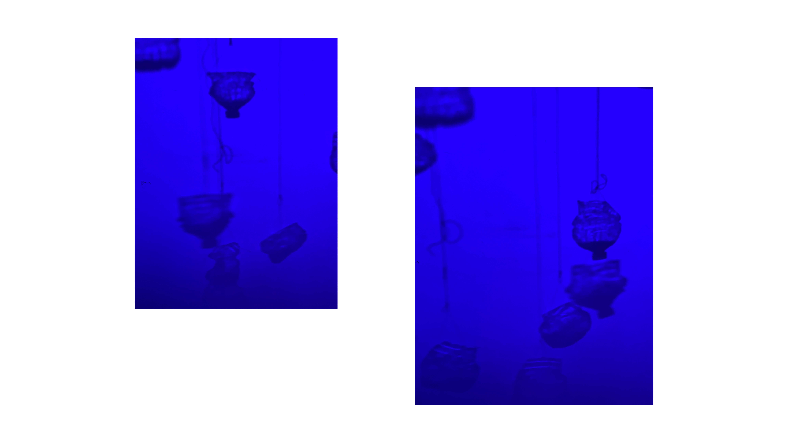 While testing and experimenting with materials, waste, water and light we worked with movement. creating a mobile with water hanging. The different weight of the water in the different holders automatically creates a flowing movement.
The objects are a translation of the dinner experience, using familiar objects as plastic bottles in an unrecognizable way to create a new way of seeing and understanding things. These are combined with bio materials, showing possibilities of materials that may not affect the sea in the same way.
There will be three mobiles hanging in the room, each with different amounts of water inside, creating movement in different directions and speeds. By placing them with paths inbetween they can transform the way guests move in the space, becoming a part of the installation, where lights are creating shadows all around the room from both the obejcts and people.
 During the event we have partnered with Corpen Gin one of Barcelona’s first urban craft distilleries. They are known for their exceptional gin, liqueurs, and other beverages that deviate from the ordinary. Not only do they prioritize quality and taste, but they also champion sustainability. Corpen Gin bottles are crafted from recycled glass, their caps are made of wood and cork, and even the capsule on top of the cap is composed of cellulose. They actively embrace circular economy practices and repurpose by-products from their gin distillation process to create their Whitecap Bitters.
During the event we have partnered with Corpen Gin one of Barcelona’s first urban craft distilleries. They are known for their exceptional gin, liqueurs, and other beverages that deviate from the ordinary. Not only do they prioritize quality and taste, but they also champion sustainability. Corpen Gin bottles are crafted from recycled glass, their caps are made of wood and cork, and even the capsule on top of the cap is composed of cellulose. They actively embrace circular economy practices and repurpose by-products from their gin distillation process to create their Whitecap Bitters.
Together we have been working on creating a drink for the event that vidualises the sea, yet tastes great, trying different recipes and additions to create a colorful blue drink that emphasises the topic of the sea. After experimenting we will be serving a gin tonic with pea flowers that create a blue color, slowly transforming into purple when adding tonic. 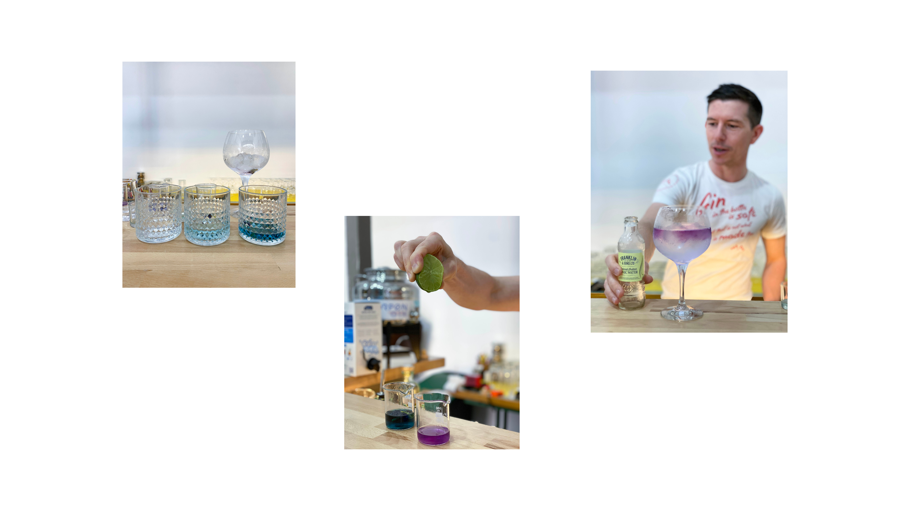 As through the dinner we aim to activate as many sense as possible with visuals, sounds, taset and smell. Together with the drink served guests are also served a jello cake placed on recycled plastic tables that we have created for the event. They are served as a collaborative meal, where everyone takes a sppon each and eats from different tables. A way to engage conversations and move around the room.